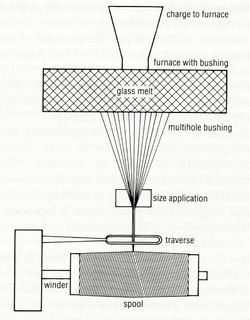
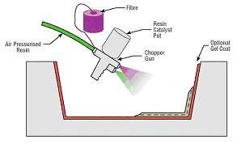

|
Cam
elyafý
Cam
elyafý silika, kolemanit, aluminyum oksit, soda gibi cam üretim
maddelerinden üretilmektedir. Cam elyafý, elyaf takviyeli
kompozitler arasýnda en bilinen ve kullanýlandýr. Cam elyafý
özel olarak tasarlanmýþ ve dibinde küçük deliklerin bulunduðu
özel bir ocaktan eritilmiþ camýn itilmesiyle üretilir. Bu
ince lifler soðutulduktan sonra makaralara sarýlarak kompozit
hammaddesi olarak nakliye edilir. Özellikle cam elyafý ile
matris arasý yapýþma gücünü arttýran "silan" bazlý ve elyaf
üzerinde ince film oluþturan kimyasallarýn sonra kullaným
sahalarý artmýþtýr.
Elyaflar
iþlem sýrasýnda dayanýklýlýklarýnýn %50'sini kaybetmelerine
raðmen son derece saðlamdýrlar. Cam elyafý halen aramid ve
karbon elyaflarýndan daha yüksek dayanýklýlýk özelliðine sahiptir.
Elyaf kumaþlarý genellikle sürekli cam elyafýnýn lifleri ile
üretilmektedir. Ýþlemler sýrasýnda deðiþik kimyasallarýn eklenmesi
ve bazý özel üretim yöntemleri ile farklý türde cam elyafý
üretilebilmektedir;

Resim
5.Cam elyafý üretimi (Phillips, 1989)
A
Cam - Pencerelerde ve þiþelerde en çok kullanýlan cam çeþididir.
Kompozitlerde çok fazla kullanýlmaz.
C Cam - Yüksek kimyasal direnç gösterir. depolama tanklarý gibi
yerlerde kullanýlýr.
E Cam -Takviye elyaflarýnýn üretiminde en çok kullanýlan cam
türüdür. Düþük maliyet, iyi yalýtým ve düþük su emiþ oraný özelliklerine
sahiptir.
Türkiye'de
Siþecam Grubuna baðlý olan Cam Elyaf Sanayii A.Þ. tarafýndan
E camý elyafý üretilmektedir. Hem yurtiçine, hem yurt içine
satýþ yapan firmadan doðrudan veya bayileri aracýyla ürün
satýn almak mümkündür. 1976'dan beri faaliyet gösteren
firma Avrupa'nýn önemli elyaf üreticilerinden biridir.
S
+ R Cam - Yüksek maliyetli ve yüksek performanslý bir malzemedir.
Yalnýz uçak sanayisinde kullanýlýr. Elyaf içindeki tellerin
çaplarý E Cam'ýn yarýsý kadardýr, böylelikle elyaf sayýsý
fazlalaþýr dolayýsýyla birleþme özelliklerinin daha güçlü
olmasý anlamýna gelen daha sert yüzey elde edilebilmektedir
Cam
elyafýnýn kullaným amacýna baðlý olarak elyaf sarma biçimleri
farklý olabilir. Elyaf çapý ve demetteki lif sayýsý farklýlaþabilir.
Cam elyafý biçimlendirildikten sonra yýpranmaya dayanýmýn
artmasý için kimyasallarla bir kaplama iþlemi yapýlýr. Kaplama
malzemesi olarak genellikle elyafýn kompozit malzemeye uygulanmasýndan
önce kolaylýkla kaldýrýlabilen ve suyla çözülebilen polimerler
kullanýlmaktadýr. Elyaf ile reçinenin birbirine iyi yapýþmasý
çok önemlidir. Ýyi yapýþmamaktan dolayý birbirinden kayan
takviye malzemesi ve matris, kompozit malzemenin sertliðini
ve saðlamlýk performansýný düþürür. Bu durumuýn engellenmesi
için elyaf kimyasallarla kaplanýr.
Karbon Elyafý;
Karbon
lifi ilk defa karbonun çok iyi bir elektrik iletkeni olduðu
bilinmesinden dolayý üretilmiþtir. Cam elyafýnýn metale göre
sertliðinin çok düþük olmasýndan dolayý sertliðin 3-5 kat
artýrýlmasý çok belirgin bir amaçtý. Karbon elyaflarý çok
yüksek ýsýl iþlem uygulandýðýnda elyaflar tam anlamýyla karbonlaþýrlar
ve bu elyaflara grafit elyafý denir. Günümüzde ise bu fark
ortadan kalkmaktadýr. Artýk karbon elyafýda grafit elyafý
da ayný malzemeyi tanýmlamaktadýr. Karbon elyafý epoksi matrisler
ile birleþtirildiðinde olaðanüstü dayanýklýlýk ve sertlik
özellikleri gösterir. Karbon fiber üreticileri devamlý bir
geliþim içerisinde çalýþmalarýndan dolayý karbon elyaflarýnýn
çeþitleri sürekli deðiþmektedir. Karbon elyafýnýn üretimi
çok pahalý olduðu için ancak uçak sanayinde, spor gereçlerinde
veya tibbi malzemelerin yüksek deðerli uygulamalarýnda kullanýlmaktadýr.
Karbon elyaflarý piyasada 2 biçimde bulunmaktadýr:
Sürekli
Elyaflar- Dokuma, örgü, tel bobin uygulamalarýnda, tek
yönlü bantlarda, ve prepreg'larda kullanýlmaktadýr.
Bütün reçinelerle kombine edilebilirler.
Kýrpýlmýþ
elyaf - genellikle enjeksiyon kalýplamada ve basýnçlý kalýplarda
makine parçalarý ve kimyasal kimyasal valf yapýmýnda kullanýlýrlar.
Elde edilen ürünler mükemmel korozyon ve yorgunluk dayanýmýnýn
yanýsýra yüksek saðlamlýk ve sertlik özelliklerine de sahiptirler.
Karbon Elyafýnýn Üretim Süreci;
Karbon
elyafý çoðunlukla iki malzemeden elde edilir;
- Zift
- PAN
(Poliakrilonitril)
Zift
tabanlý karbon elyaflarý göreceli olarak daha düþük mekanik
özelliklere sahiptir. Buna baðlý olarak yapýsal uygulamalarda
nadiren kullanýlýrlar. PAN tabanlý karbon elyaflarý kompozit
malzemeleri daha saðlam ve daha hafif olmalarý için sürekli
geliþtirilmektedir.
PAN'ýn karbon elyafýna birbirini takip eden dört aþamada
dönüþtürülmektedir;
1.
Oksidasyon: Bu aþamada elyaflar hava ortamýnda 300 derecede
ýsýtýlýr. Bu iþlem, elyaftan H'nin ayrýlmasýný daha
ucucu olan O 'nin eklenmesini saðlar. Ardýndan karbonisazyon
aþamasý için elyaflar kesilerek graphite teknelerine konur.
Polimer, merdiven yapýsýndan kararlý bir halka yapýsýna dönüþür.
Bu iþlem sýrasýnda elyafýn rengi beyazdan kahverengiye, ardýndan
siyah olur.
2. Karbonizasyon: Elyaflarýn yanýcý olmayan atmosferde
3000° C'ye kadar ýsýtýlmasýyla liflerin 100% karbonlaþma
saðlanmasý aþamasýdýr. Karbonizayon iþleminde uygulanan sýcaklýk
üretilen elyafýnýn sýnýfýný belirler;
| Karbon
Elyafi Siniflari (Grades) |
|
|
|
|
| Karbonizasyon
Isisi (°C) |
1000'e
kadar |
1000-1500
|
1500
- 2000 |
(Grafit)
2000 + |
| Karbon
elyafi sinifi |
Düsük
modülüs |
Standart
Modülüs |
Orta
modülüs |
Yüksek
modülüs |
| Elastic
modülüs (GPa) |
200'e
kadar |
200
- 250 |
250
- 325 |
325
+ |
3.Yüzey Ýyileþtirmesi karbonun yüzeyinin temizlenmesi
ve elyafýn kompozit malzemenin reçinesine daha iyi yapýþabilmesi
için elektrolitik banyoya yatýrýlýr.
4. Kaplama; Elyafý sonraki iþlemlerden (prepreg
gibi) korumak için yapýlan nötr bir sonlandýrma iþlemidir.
Elyaf reçine ile kaplanýr. Genellikle bu kaplama iþlemi
için epoksi kullanýlýr. Kompozit malzemede kullanýlacak
olan reçine ile elyaf arasýnda bir arayüz görevi görür.
Karbon
elyafýnýnýn tüm diðer elyaflara göre en önemli avantajý
yüksek modülüs özelliðidir. Karbon elyafý bilinen tüm
malzemelerle eþit aðýrlýklý olarak karþýlaþtýrýldýðýnda
en sert malzemedir.
Aramid Elyafý;
Aramid
kelimesi bir çeþit naylon olan aromatik poliamid'den
maddesinden gelmektedir. Aramid elyafý piyasada daha çok
ticari isimleri Kevlar (DuPont) ve Twaron (Akzo Nobel)
olarak bilinmektedir. Farklý uygulamalarýn ihtiyaçlarýný
karþýlamak için birçok farklý özelliklerde aramid elyafý
üretilmektedir.
-
-
-
-
-
-
-
-
-
Kevlar
elyaflý kompozitler Cam elyaflý kompozitlere göre 35%
daha hafiftir
-
E
Cam türü elyaflara yakýn basýnç dayanýklýlýðý
Aramid
elyafýnýn dezavantajlarý
1-
Bazý tür aramid elyafý ultraviole ýþýnlara maruz kaldýðýnda
bozulma göstermektedir. Sürekli karanlýkta saklanmalarý
gerekmektedir.
2-
Elyaflar çok iyi birleþmeyebilirler. Bu durumda reçinede
microskopik çatlaklar oluþabilir. Bu çatlaklar malzeme
yorulduðunda su emiþine yol açmaktadýr.
Genellikle polimer matrisler için takviye elemaný olarak
kullanýlan aramid elyafýnýn bazý kullaným alanlarý;
-
Balistik
koruma uygulamalarý; Askeri kasklar, kurþun geçirmez
yelekler...
-
Koruyucu
giysiler; eldiven, motorsiklet koruma giysileri, avcýlýk
giysi ve aksdesuarlarý
-
Yelkenliler
ve yatlar için yelken direði
-
Hava
araçlarý gövde parçalarý
-
-
Endüstri
ve otomotiv uygulamalarý için kemer ve hortum
-
Fiberoptik
ve elektromekanik kablolar
-
Debriyajlarda
bulunan sürtünme balatalarýnda ve fren kampanalarýnda
-
Yüksek
ýs ve basýnçlarda kullanýlan conta, salmastra vb.
En
çok bilinen ve kullanýlan aramid elyafý Dupont firmasýnýn
tescilli ismi olan Kevlar'dýr. Kevlar 29, and Kevlar
49 olarak iki çeþidi bulunmaktadýr. Kevlar 29 üstün darbe
dayanýmý özelliðine sahiptir ve bu nedenle çoðunlukla
kurþun geçirmez yelek gibi uygulamalarda kullanýlýrlar.
Tablo 3. Belli baþlý elyaflarýn karþýlaþtýrýlmasý
| Malzeme
|
Yoðunluk
(g/cm3) |
Çekme
Dayanýmý (MPa) |
Modülüs
(GPa) |
| E-Cam |
2.55
|
2000 |
80 |
| S-Cam |
2.49 |
4750 |
89 |
| Alüminyum |
3.28 |
1950 |
297 |
| Karbon |
2.00 |
2900 |
525 |
| Kevlar
29 |
1.44 |
2860 |
64 |
| Kevlar
49 |
1.44 |
3750 |
136 |
Kompozit malzeme üretim yöntemleri;
Ýstenilen
özelliklerde ve biçimde kompozit malzeme üretimi için bir
çok yöntem bulunmaktadýr. Bu yöntemlerden baþlýcalarý aþaðýdadýr;
Elle yatýrma (hand lay-up)
Dokuma
veya kýrpýlmýþ elyaflarla hazýrlanmýþ takviye kumaþlarý hazýrlanmýþ
olan kalýp üzerine elle yatýrýlarak üzerine sývý reçine elyaf
katmanlarýna emdirilir. Elyaf yatýrýlmadan önce kalýp temizlenerek
jelkot sürülür. Jelkot sertleþtikten sonra elyaf katlarý yatýrýlýr.
Reçine ise kompozit mazlemenin hazýr olmasý için en son sürülür
Bu iþlemde elyaf kumaþýna reçinenin iyi nufuz etmesi önemlidir.
El yatýrma tekniðinde en çok kullanýlan polyester ve epoksi'nin
yanýsýra vinil ester ve fenolik reçineler de tercih edilmektedir.
Elle yatýrma yoðun iþçilik gerektirmesine raðmen düþük sayýdaki
üretimler için çok uygundur.
Püskürtme (spray-up)
Püskürtme
yöntemi elle yatýrma yöntemini aletli þekli olarak kabul edilebilir.
Kýrpýlmýþ elyaflar kalýp yüzeyine, içine sertleþtirici katýlmýþ
reçine ile birlikte özel bir tabanca ile püskürtülür. Elyafýn
kýrpýlma iþlemi tabanca üzerinde bulunan ve baðýmsýz çalýþan
bir kýrpýcý sayesinde yapýlýr. Püskürtülme iþlemi sonrasý
yüzeyin bir rulo ile düzeltilmesiyle ürün hazýrlanmýþ olur.
|  |
|
Resim
6. Püskürtme Yöntemi
|
Püskürtme
Tabancasý |
|